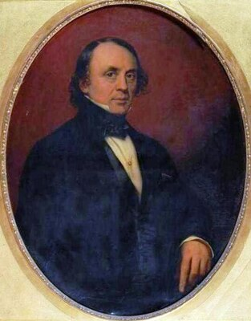

Jean-Baptiste Joseph BOSSUT — Né le 22/10/1790 à Roubaix — Décédé le 09/02/1874 à Roubaix
Jean-Baptiste Joseph BOSSUT
Né le 22/10/1790 à Roubaix
Décédé le 09/02/1874 à Roubaix
Résumé
Jean-Baptiste Joseph Bossut naît le 22 octobre 1790 à Roubaix, fils de Pierre François Bossut (1765-1845), d'une famille de marchands-fabricants de la Fabrique roubaisienne. Le 20 octobre 1813, il épouse à Roubaix Pauline Monique Grimonprez, alors âgée de dix-sept ans, fille de Pierre Alexandre Grimonprez et d'Hyacinthe Victoire Bulteau, deux familles au cœur du patronat textile local. De ce mariage naissent plusieurs enfants, dont Louis en 1816, Pauline en 1818 et Adèle en 1819 : les unions des deux sœurs, en 1837 avec Louis Joseph Wattinne et en 1841 avec Louis Motte, vont structurer l'industrie textile nordiste pour un siècle. Le ménage est domicilié rue du Château, à Roubaix.
Commissionnaire en toiles, il devient maire de Roubaix en 1840, à la suite de Jean-Baptiste Screpel-Lefebvre, et le reste jusqu’au 24 juin 1845, date à laquelle lui succède le notaire Louis-Alphonse Lanvin. C’est donc un maire en exercice que le décret du 30 mars 1842 fait chevalier de la Légion d’honneur, grade qu’il ne dépassera jamais : son dossier, reconstitué en 1872 après l’incendie du palais de l’ordre, porte en regard de la nomination la qualité de « maire de la Ville de Roubaix ». Un acte publié au Bulletin des lois le désigne de même comme « commissionnaire, maire de la ville de Roubaix », aux côtés de Lanvin encore notaire. Il aura ainsi administré la ville pendant les quatre années où s’élèvent ses premières filatures mécaniques, dont celle que son gendre Louis Motte construit en 1843.
La Société d'émulation de Roubaix attribue à « M. Bossut » la fondation de la première maison de commission en textile, modèle qui permettait aux fabricants de se concentrer sur leur production. Elle ne donne pas de prénom, et l'attribution reste partagée entre Jean-Baptiste et son père Pierre François : la question n'est pas tranchée.
Il meurt le 9 février 1874 à Roubaix, à quatre-vingt-trois ans, ayant vu le bourg de son enfance devenir une ville industrielle.
À ne pas confondre avec son homonyme Jean-Baptiste Bossut (1820-1885), également roubaisien, époux de Clémence Delaoutre.
Sources :
- données familiales
- Thierry Prouvost, généalogie Bossut
- Wikipédia, liste des maires de Roubaix
- Bulletin des lois de la République française, occurrence signalée par l'index de la bibliothèque Geneanet, tome et date non localisés
- Geneanet, Pierre Fitton
- base Léonore, notice L0301087, cote LH//301/87
- Transcription du dossier de Légion d'honneur
- Société d'émulation de Roubaix, Les fondateurs de la Grande Industrie
- Annuaire-Mairie, liste des maires de Roubaix.
{kind=link}

📷 Cliquez pour voir 1 photo(s)